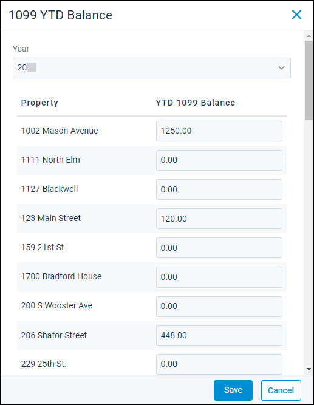

Source: https://rmxhelp.rentmanager.com/Topics/Express/Action/Vendor-1099-YTD-Balances-Enter.htm
Enter Vendor 1099 YTD Balances
A vendor's Tax Information tile helps you generate 1099 tax forms through Rent Manager. If you made payments to a vendor before using Rent Manager, or if you made payments that are not yet logged in Rent Manager, you need to enter the sum of those payments as a beginning balance by property for the vendor. After the vendor's beginning balances are updated, you can generate a single 1099 tax form for the vendor for the entire year, even if you used another system prior to Rent Manager. The Vendor 1099 Breakdown and Vendor 1099 reports include the updated balances the next time they are generated.
Related Privileges
| Group | Privilege | Column |
|---|---|---|
| Payables | Vendors | View, Edit |
For more information, refer to Control User Access.
To enter vender 1099 YTD balances, do the following:
-
Go to
 arrow_forward Payables arrow_forward General arrow_forward Vendors and select a vendor from the list.
arrow_forward Payables arrow_forward General arrow_forward Vendors and select a vendor from the list.
The vendor's details page displays. -
On the Tax Information tile, click YTD Balances.

-
Select the fiscal year from the drop-down. The current fiscal year is selected by default.
-
In the YTD 1099 Balance for each property where the vendor did 1099 work, enter the total dollar amount paid to the vendor.
-
Click Save.
The YTD balance is entered and now displays in reports like the Vendor 1099 Breakdown report.